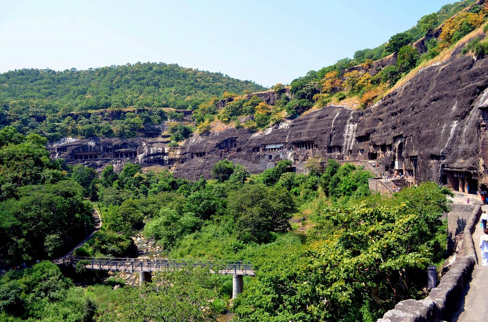
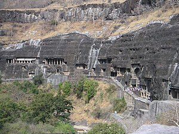
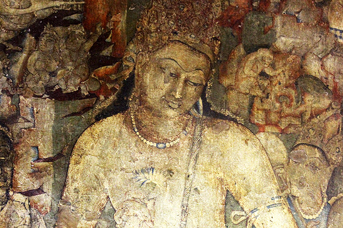

Gallery




The Ajanta Caves are a series of 30 ancient Buddhist rock-cut caves located in Maharashtra, India. These caves are renowned for their stunning murals and sculptures, dating back to the 2nd century BCE.
Declared a UNESCO World Heritage Site, the Ajanta Caves attract tourists and historians from all over the world.
The caves were built in two phases, the first during the Satavahana period, and the second during the Vakataka period. The artistic and architectural styles reflect the changing cultural and religious influences over the centuries.
The caves were rediscovered in 1819 by a British officer, and since then, they have been a subject of fascination and study.
Day 1: Arrival and orientation tour of Ajanta village.
Day 2: Full-day guided tour of the Ajanta Caves, exploring the intricate carvings and paintings.
Day 3: Leisure day for photography and personal exploration, followed by departure.
There are several options for accommodation near the Ajanta Caves, ranging from budget hotels to luxury resorts. Here are some recommendations:
In addition to the Ajanta Caves, here are some nearby attractions that you can explore during your visit:
The best time to visit Ajanta is during the cooler months, from October to March. The summer months can be quite hot, with temperatures reaching up to 40°C (104°F), while the monsoon season from June to September brings heavy rainfall, which may limit access to the caves.
"Visiting the Ajanta Caves was an unforgettable experience. The artwork is truly mesmerizing, and the history behind it is fascinating. Highly recommend a guided tour!"
- Aditi Verma
"The caves are incredibly well-preserved, and the peaceful atmosphere is perfect for reflection. A must-see destination for history buffs!"
- Rajesh Kumar